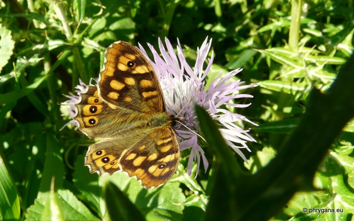
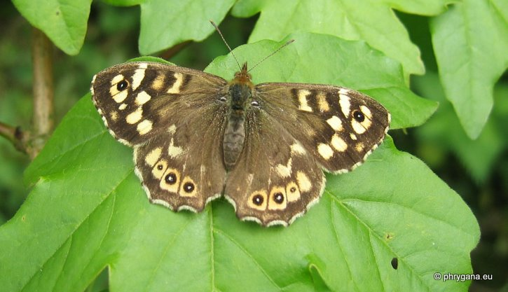
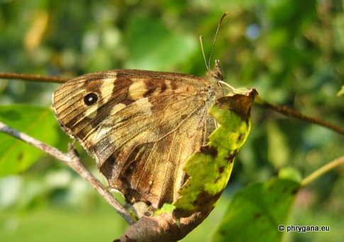
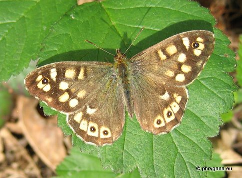
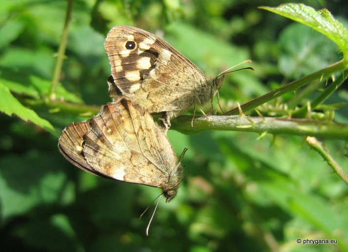

| PHRYGANA | Fauna | Flora | Galles | liste des espèces |
contact -
info - commentaires phrygana1 (at) gmail.com |
| Particularités crétoises | nouveautés | Mines | ressources naturelles |
| Pararge aegeria (Linnaeus 1758) |
| 317 | Fauna | LEPIDOPTERA | NYMPHALIDAE | Satyrinae | Pararge Hubner 1819 |
|
 Pararge aegeria butinant Galactites tomentosus Plakias 22 janvier 2012 |
| fr: le Tircis en: Speckled Wood nl: Bont zandoogje de: Waldbrettspiel |
| Adulte: envergure de 38 à 44 mm. Couleur du dessus brun foncé avec des taches fauves et un ocelle noir pupillé de blanc; sur l'aile postérieure, les taches fauves submarginales ont des ocelles pupillés de blanc; le mâle a une bande androconiale brune, duveteuse |
| Espèce probablement (bi-) trivoltine: périodes de vol de janvier à octobre |
| Oeufs pondus un à un au moment le plus chaud de la journée; éclosion après 10 -20 jours; chenille de couleur verte, à poils courts, avec une bande médiane vert foncé; chrysalide suspendue à une tige ou feuille |
| Larve oligophage sur diverses Poaceae |
| Statut en Crète: indigène |
| Biotopes en Crète: phrygana, terrains boisés clairs, vallées ombragées, parcs, jardins. |
| Altitudes: 0 - 1300 (- 1800) m. |
| Distribution: Europe, Asie Mineure et centrale |
| Note: le mâle a un comportement territorial marqué; l'adulte aime se mettre dans des endroits ensoleillés (clairières) |
| Pararge aegeria (Linnaeus 1758) en Belgique |
| 2 - 3 générations: périodes de vol entre mars et octobre; chrysalide ou chenille dernier instar en période hivernale |
| larve oligophage sur diverses Poaceae dont: Poa pratensis (le Pâturin des prés), Brachypodium pinnatum (le Brachypode penné), Festuca gigantea (la Fétuque géante), Dactylis glomerata (le Dactyle vulgaire) |
|
 Pararge aegeria Rosières (Belgique) 06 mai 2004 |
|

 Pararge aegeria Rosières (Belgique) 17 août 2005 Pararge aegeria Rosières (Belgique) 30 avril 2005 |
|
 Pararge aegeria Rosières (Belgique) 02 mai 2008 |
| 30 avril 2012 |
| © paul fontaine -- © Phrygana.eu 2007 -- 2013 |